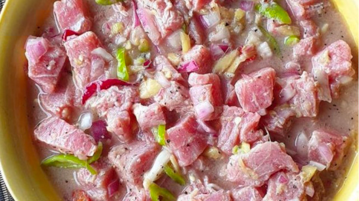

Kinilaw
Kinilaw

Marinated and delicious
This recipe takes fresh tuna and instead of cooking we marinate in coconut vinegar
Ingredients
- Fresh tuna steak
- Onion
- Tomato
- Ginger
- Chiles
- Coconut vinegar
Steps
- Wash your tomato and dice
- Wash two chiles and dice
- Peel and dice a knob of ginger
- Peel and dice your onion
- Cut your tuna steak in to bite sized cubes
- Place your tuna in a bowl
- Pour coconut vinegar in to the bowl so that most of the tuna is submerged
- Squeeze the tuna to suck up the coconut vinegar like a sponge
- Get a serving bowl and add half a cup of coconut vinegar along with the diced ingredients
- Discard the vinegar from the bowl with the tuna
- Add tuna to the serving bowl and mix
- Enjoy